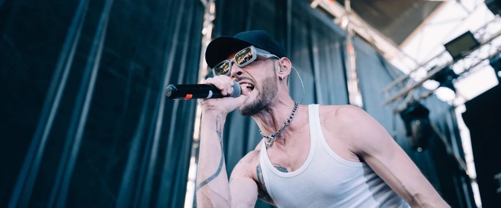
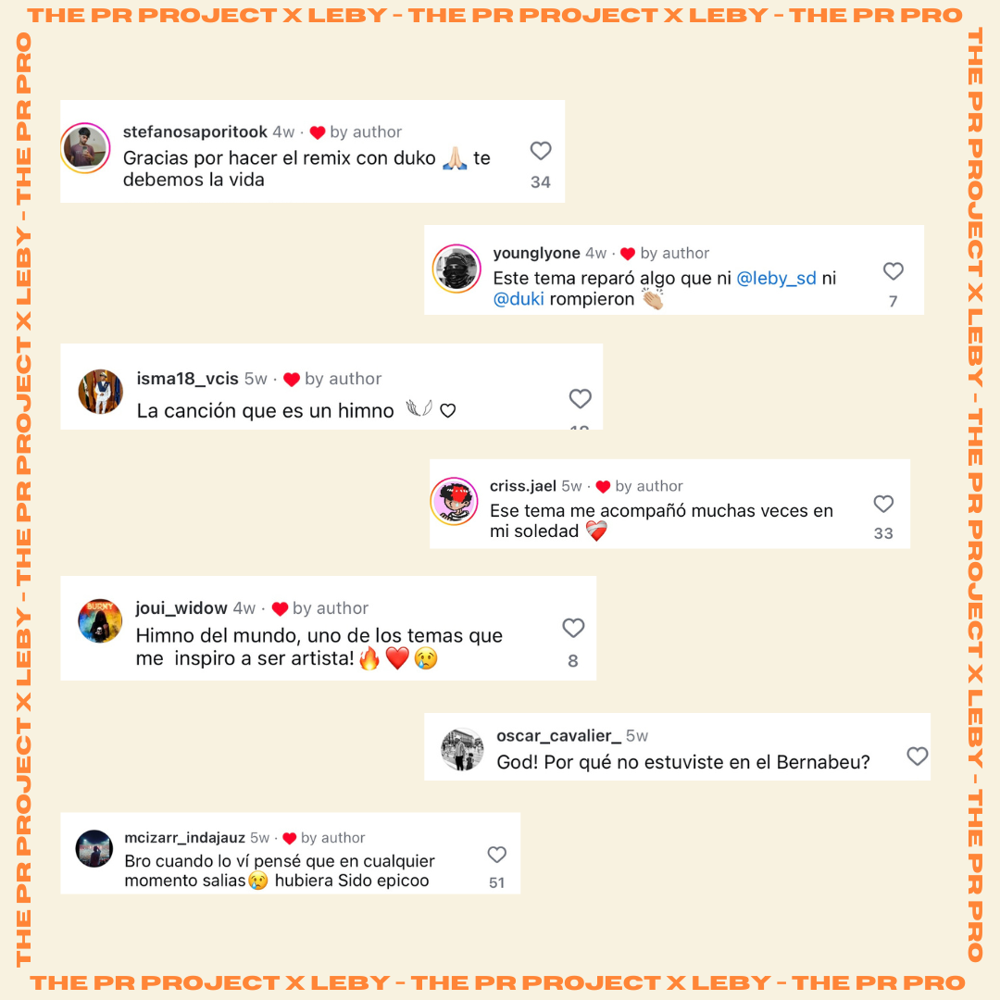
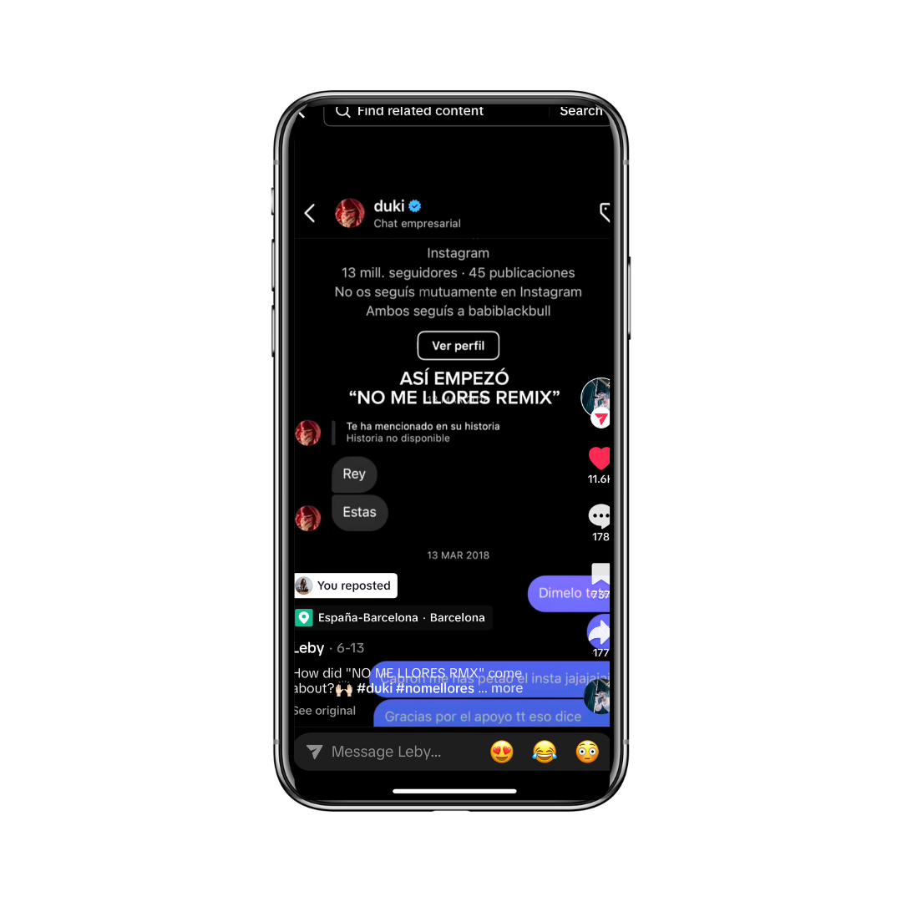
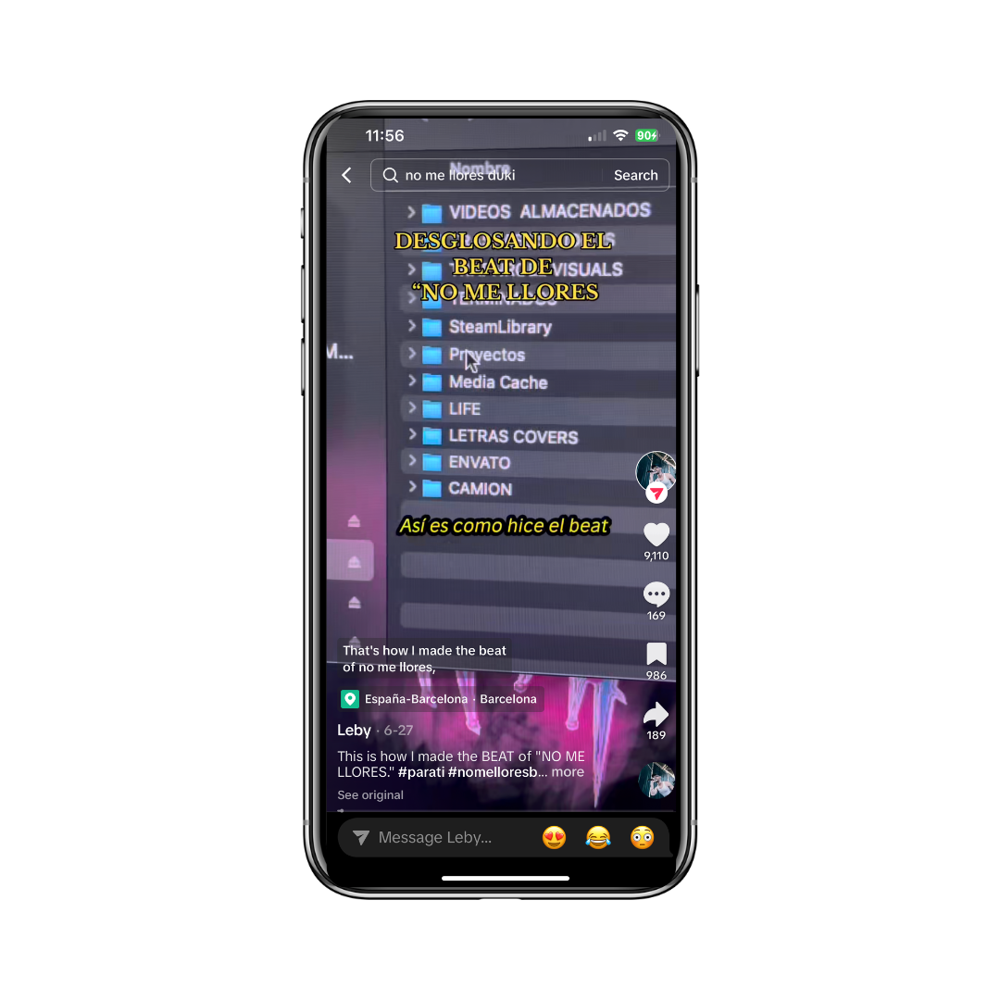
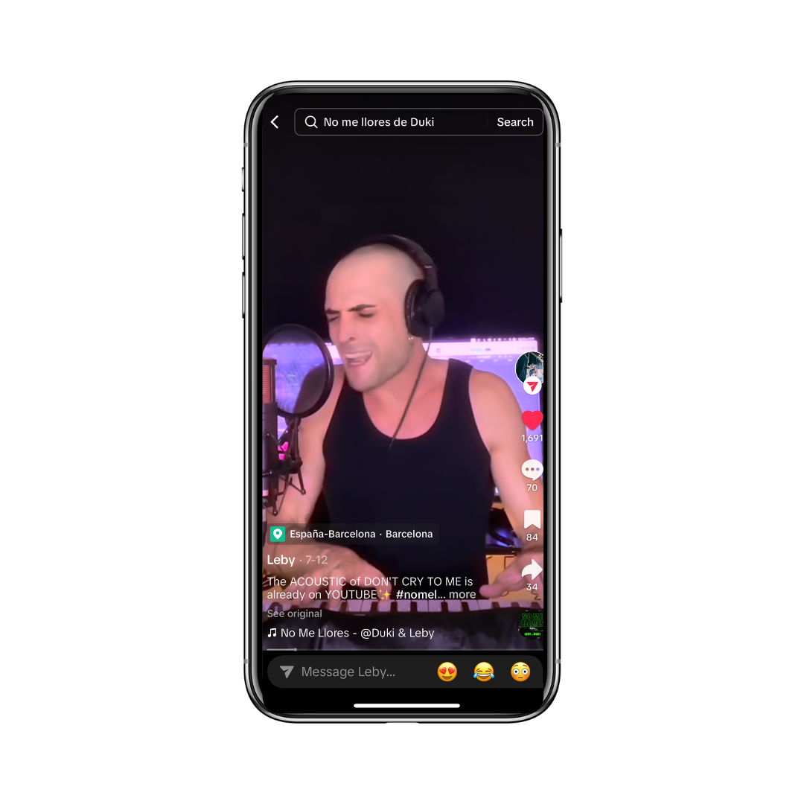
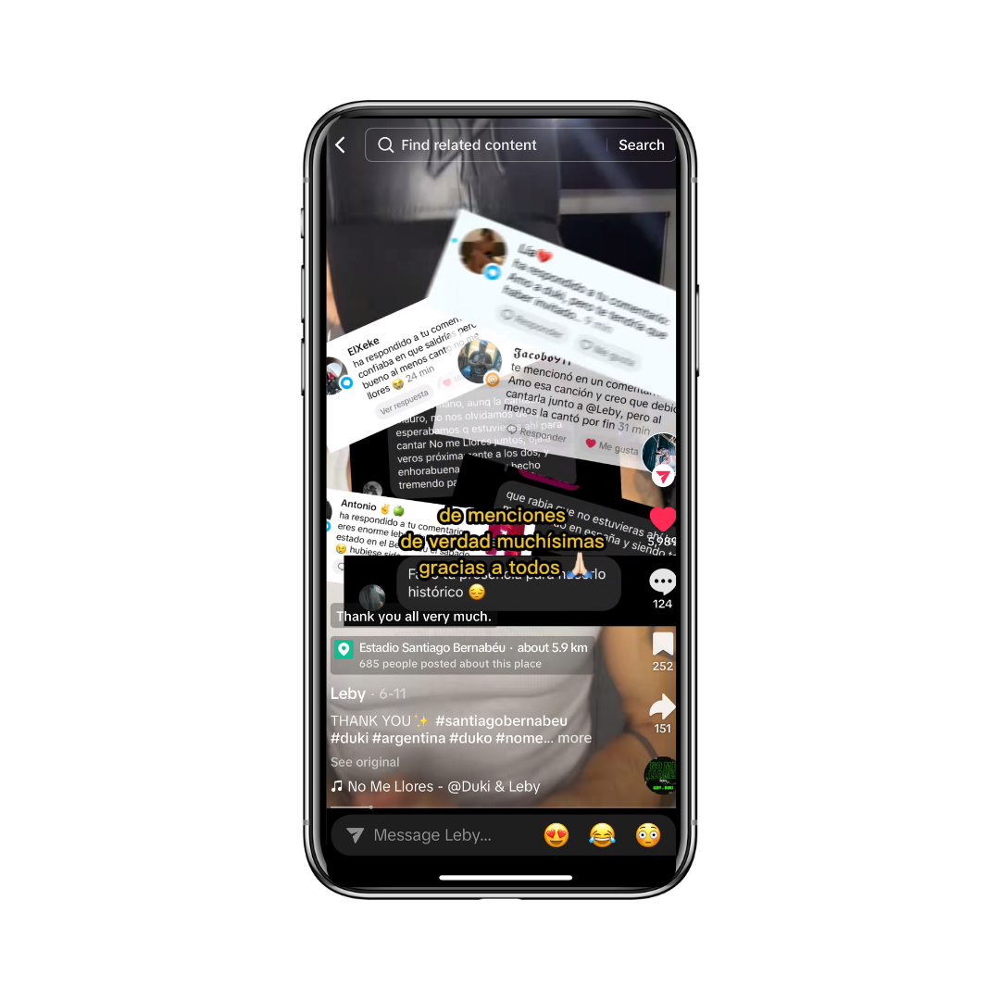
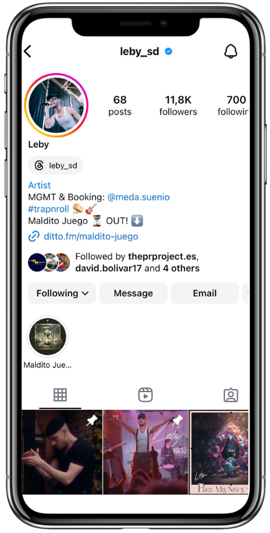
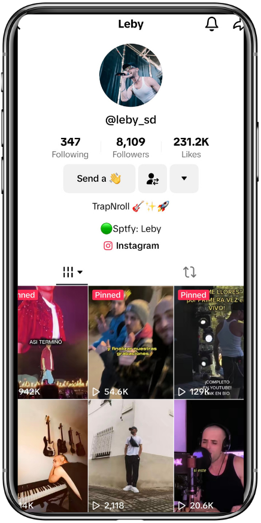

Social media storytelling and "No Me Llores" release
Objective: Capitalise on social media hype to strengthen Leby's community and attract new fans through magnetic storytelling, showcasing all the layers behind his music and creating an emotional connection with his audience.
While promoting his track "Maldito Juego" ft. Kiko Osuna, many fans were asking about the "No Me Llores" Remix with Duki after his concert at the Bernabéu. We detected that a large part of the audience didn't know the story behind the song and wanted to hear it.

After the concert, Leby received hundreds of messages thanking him for writing that "anthem". We detected a clear need: his audience wanted to know more about him as a songwriter and the real story behind "No Me Llores".





How the song was born
How the collaboration with Duki came about
The composition and creation process
The context and inspiration behind the lyrics


Doubled his followers on Instagram and TikTok in less than two weeks.
Views increased to over 100k.
But most importantly, he built an active, united community deeply grateful to the artist for opening that emotional window into his process as a songwriter, artist and human being.
Want a campaign like this for your project? Explore our PR and communications services.